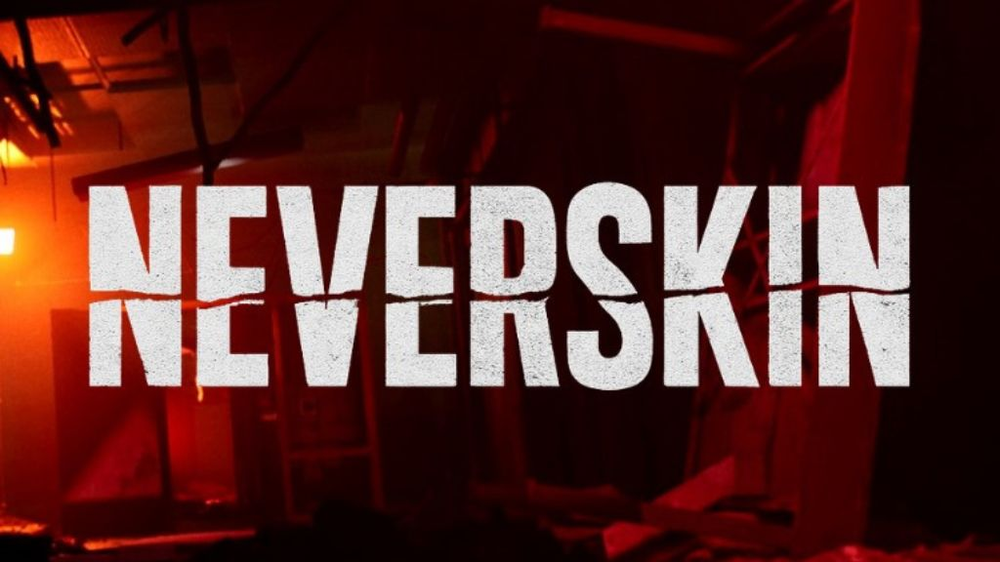

Interview with Neverskin

The following feature is now included in our online magazine which is also available in print.
Online Magazine | Print MagazineFor more details contact us at: volechomag@gmail.com
How did it feel to reunite musically after 20 years since Ambiossis?
Clint: It actually was interesting. We didn't really hang out anymore for such a long time and I myself hadn't done anything with music for about 8 years.
One day I was jogging and listening to tunes when all of a sudden our old band Ambiossis popped up, whilest we did not upload the music on Spotify and I did not select it. So while I was running and one of the tracks kicked in, I was thinking, 'I wonder how Remy is doing?'. So I send him a message and we met up and basically expressed wanting to make some tunes in general.
The whole process went weirdly natural and was so smooth, the first track was lyrically and vocally written and recorded before the end of the next week, so we basically had our base down in no time.
Follow Our Playlist For More Music!
What was the spark that led to creating "Snatched"?
Remy: We were sitting around while I jammed some grooves on my guitar. It reminded us of the old-school nu-metal we grew up with a groove that makes your head bop and gives you the urge to run through the streets for no reason at all. The verses and choruses came naturally, because back when we had a band together from 2003 to 2006 (Ambiossis), we already blended groove, rap verses, and big ballad-like choruses. It felt like we simply picked up where we left off in 2006.
What emotions do you hope listeners take from "Snatched"?
Clint: I of course, hope it gives people a positive or helpful feeling or emotion, but honestly, any emotion will do. As long as people feel a certain way about what we made. Feel free to love the track, we hope you do, but also feel free to hate it or dislike it. Music is universal and the beauty of it, is that it connects with some and doesn't with others. There is enough to go around :) But of course, we make music and share it for people to hopefully connect to it and love it.
Why did you choose to record in home studios instead of a traditional setup?
Remy: With so many instruments being multi-sampled in the best studios, and plugins -especially guitar amps- sounding better than ever, particularly in the last five years, I personally don’t feel the need to record in a traditional studio. I have great memories of working in them, but it’s just not convenient for me. Recording at home saves money and removes time pressure. I've been recording demos at home since around 2000, and by 2003 I was already using a guitar amp sim floorboard for both live gigs and home sessions.
How has your creative process evolved since your early band days?
Remy: It’s quite similar, but with all great sounding plugins and libraries these days I just start out with synths / weird sounds / drums before I even do guitars, because it sparks guitar riff idea's. Back then, we just had some rough guitar parts and vocal sketches as demos, often guessing what the final product would sound like. Now, while recording it almost sounds like the end product, which sparks more idea's. But we still sit around working out the guitar parts like the early days and Clint have his lyrics done in a couple of hours and he sends his vocal-demo the next day, so that stayed the same.
What’s next for Neverskin after this debut single?
Clint: Well, lets say we hope to reach as many people as we can with our debut single 'Snatched' first off.
Next step will be the release of our second single. I won't spoil to much about that one yet. Long term, we're more or less winging it and basing it on how people receive it. So although there are no plans yet, we could end up going live, recording an EP or album, or perhaps keeping it on the low. Let's see...
If you could describe your music in three words, what would they be?
Clint: Oh that is a though one. I guess, 'Emotional' (full of all types of emotion), 'Free' (not limited by boundaries, we make what we feel, could be this now and something completely different later), 'Expressive' (lyrics are metaphorical, the music is whatever we feel like we want it to be)
This dispatch was last updated on September 16, 2025